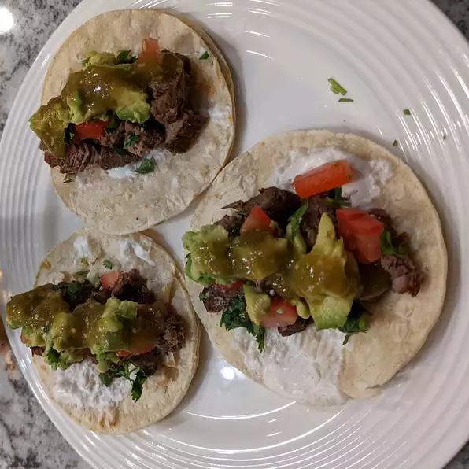

Tacos de carne asada

Description
Tacos de carne asada that are to die for.
These are my families secret recipe so it must stay down low.
Ingredients
1 ½ pounds boneless beef top sirloin, cut into thin bite-size slices
1 teaspoon freshly ground black pepper
crushed red pepper to taste
1 (28 ounce) can tomatillos
2 fresh jalapeno peppers, seeded
4 tablespoons canola oil, divided
1 (10.5 ounce) can beef broth
12 (6 inch) corn tortillas
1 avocado - peeled, pitted and sliced
1 bunch fresh cilantro, chopped
Steps
- Place sliced meat into a shallow bowl, and season with salt, black pepper, and crushed red pepper. Squeeze the lime juice over the meat, and turn until evenly coated. Cover, and refrigerate for 30 minutes.
- In a blender or food processor, combine tomatillo and jalapeno. Puree for 15 to 20 seconds, or until thick. Heat 1 tablespoon oil in a large skillet over medium high heat. Carefully pour in tomatillo mixture. Cook, stirring frequently, for 5 minutes. Stir in beef broth. Reduce heat, and simmer for 20 to 30 minutes, or until mixture coats a spoon. Transfer mixture to a serving dish.
- Heat tablespoon oil in a large skillet over high heat. Stir in 1/3 of the beef, and saute for 1 minute. Transfer to serving dish. Repeat with remaining beef. Meanwhile, heat tortillas in the oven or microwave, according to package instructions.
- To serve, place two tortillas on top of each other. Add desired amount of meat, spoon over some tomatillo mixture. Top with onions, tomatoes, avocado and cilantro. Garnish with a wedge of lemon, to be squeezed over taco before eating.